Bañeras.
A pesar las limitaciones de espacio en los baños y de una mayor conciencia relacionada con optimizar el consumo de agua, siguen siendo muchos/as quienes vienen a vernos con la idea, el sueño, de incorporar una bañera en su baño.
Bien porque les encanta utilizaras, o porque tienen niños pequeños, la bañera sigue siendo un elemento importante para muchas personas. También para hoteles que buscan aportar un plus de confort a sus clientes.
La tendencia general es hacia la bañera acrílica, principalmente de tipo exenta y de resina, más que las de acero.
Te ofrecemos una amplia selección de principales marcas de bañeras, en todos los tamaños y estéticas, para facilitar la homogenización del baño en cuanto a texturas y colores.
Y si lo que buscas no está en exposición, lo buscamos en la Bagnoteca, nuestra biblioteca de catálogos.
Novedades 202642

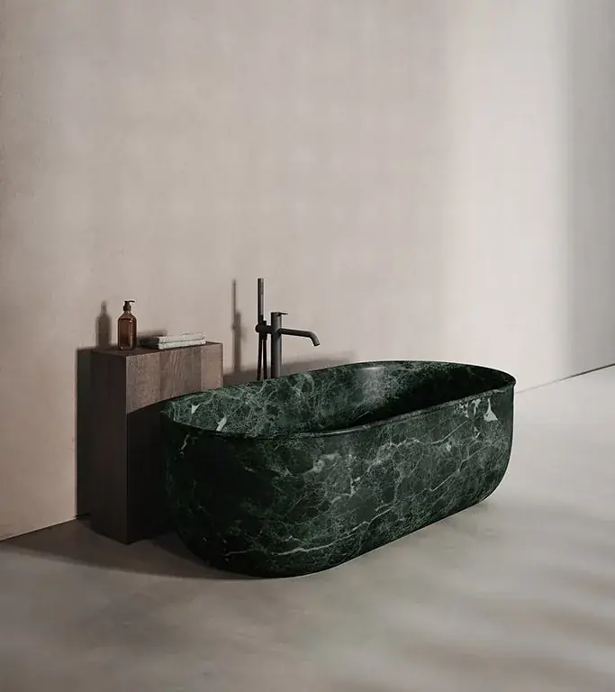
Bañeras¿Cuánto cambia el carácter de una bañera solo con el acabado?
Misma silueta, otra bañera.
Inbani estrena tres acabados para Prime y Arc, de Norm Architects: Rosso Lepanto, intenso; Emperador, cálido; Verde Indalo, vibrante.

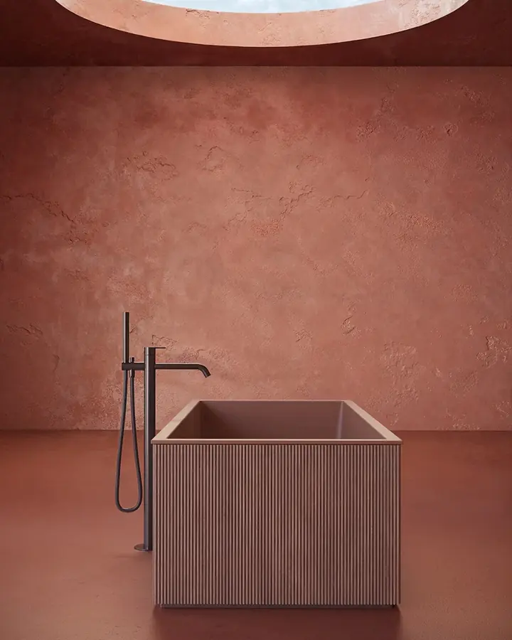
BañerasBañera exenta Grate - Inbani
En las bañeras exentas, la comodidad de uso y la integración en el proyecto son aspectos tan importantes como su diseño.
La bañera Grate ha sido concebida para responder a ambas necesidades. Su respaldo ergonómico mejora la posición del cuerpo durante usos prolongados, favoreciendo una experiencia más confortable.
Además, incorpora una repisa integrada que permite disponer de los elementos de uso habitual sin necesidad de añadir accesorios auxiliares, contribuyendo a una solución más limpia y funcional.
El ritmo generado por sus líneas repetitivas facilita su integración en proyectos donde la geometría y la proporción tienen un papel protagonista. La posibilidad de combinar materiales como UHS o Solid Surface con faldones de madera configurables en número y acabado amplía las opciones de adaptación a distintos estilos y soluciones constructivas.
- Bañeras
Bañera Balcoon – Duravit
Un volumen frontal que dialoga con la arquitectura del baño.
El borde ovalado elevado de esta bañera se apoya sobre una superficie acrílica continua que remata las esquinas sin juntas, facilitando el mantenimiento y funcionando como repisa perimetral.
Su interior, de líneas suaves y proporción ergonómica, permite alternar ducha y baño, aportando versatilidad sin romper la coherencia formal de esta colección.
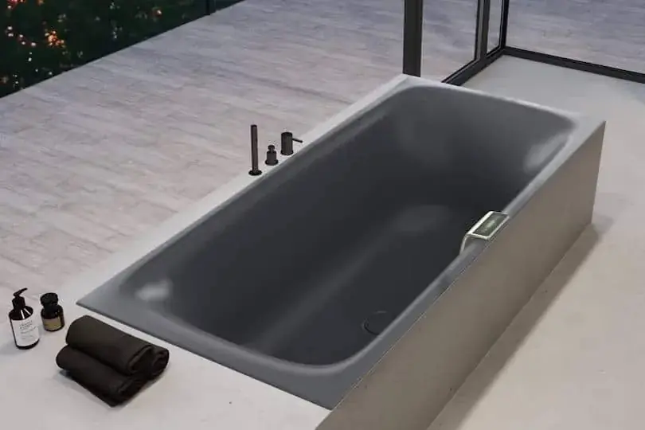
BañerasBañera Nuio Duo - Kaldewei
La bañera Nuio Duo de Kaldewei, diseñada por Stefan Diez y presentada en la ISH 2025, redefine la experiencia del baño con una estética escultural y una ergonomía diseñada para el máximo confort. Su silueta fluida y redondeada, reminiscentes de las formas que el agua crea de forma natural, se integra con elegancia en cualquier ambiente moderno.
Con dimensiones generosas, respaldo ergonómico y zonas pronunciadas para cuello y hombros, esta bañera ofrece una comodidad excepcional incluso siendo una de las más profundas de la marca.
La versión Zen Edition eleva la experiencia sensorial al incorporar calentamiento infrarrojo ajustable, iluminación ambiental, altavoces integrados y panel de control LCD táctil, creando un entorno relajante y regenerador.
El desagüe y rebosadero están integrados de forma discreta y elegante con sistema push-to-open empotrado, manteniendo su estética minimalista. Además viene en cuatro tamaños —170×80, 180×80, 190×90, 200×100 cm—, garantizando adaptabilidad a diferentes espacios.
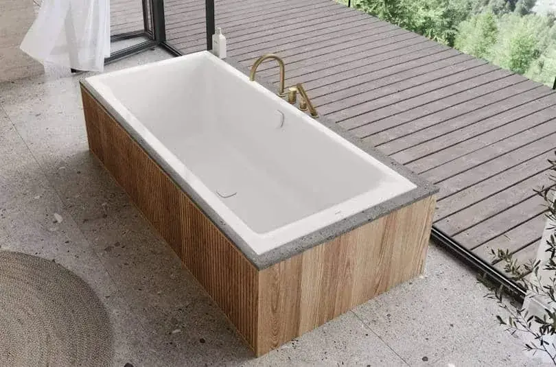
BañerasBañera Puro Next - Kaldewei
El modelo Puro Next de Kaldewei representa una evolución elegante de la icónica serie Puro, ofreciendo ahora tres variantes adaptadas a diferentes necesidades: una bañera monoplaza con una amplia superficie de descanso, la versión Duo con respaldos ergonómicos en ambos extremos para compartir el baño, y la opción Combi, que combina la experiencia de baño con una práctica superficie de ducha integrada.
Su diseño destaca por un borde extraplano de solo 10 mm de altura, lo que aporta un aspecto refinado y permite una integración perfecta con el alicatado del baño. La bañera está construida en acero vitrificado, un material resistente a golpes, arañazos y decoloración, lo que garantiza una superficie impecable tras cada uso—una opción ideal tanto en hogares como en entornos hoteleros.
Disponible en seis tamaños (de 160 × 70 cm hasta 190 × 90 cm), cubre una amplia gama de distribuciones y facilita una planificación flexible del espacio. La ergonomía, presente tanto en el fondo generoso como en la ligera inclinación cervical del respaldo, asegura una postura confortable. Además, con una altura de acceso adecuada y la opción de añadir asas, Puro Next está pensada para todas las etapas de la vida.
La superficie esmaltada no solo es estética, sino también funcional: recupera fácilmente su brillo y mantiene su belleza con el mínimo esfuerzo. Quienes busquen seguridad adicional pueden optar por tratamientos como Invisible Grip o esmaltes antideslizantes para una mayor confianza al entrar y salir de la bañera.
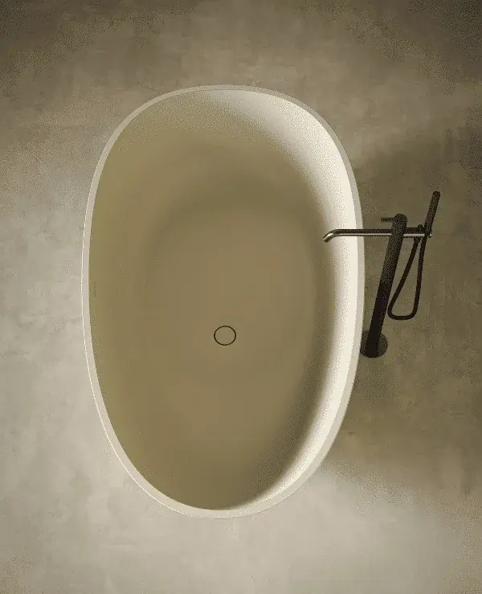
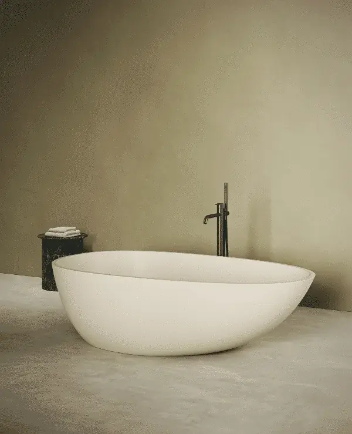
BañerasBañera exenta Gout - Inbani
Bañera exenta de diseño asimétrico, inspirada en la fluidez del agua. Sus formas orgánicas transmiten ligereza visual y refuerzan la sensación de armonía en el espacio.
Fabricada en SolidSurface o en más de 60 tonalidades UHS, ofrece una superficie cálida al tacto, resistente y de fácil mantenimiento.
Con medidas de 175×100×51 cm y capacidad de 310 litros, garantiza una experiencia de baño ergonómica y confortable.
Indicada para cuartos de baño que priorizan el bienestar y la coherencia estética en el conjunto del baño.
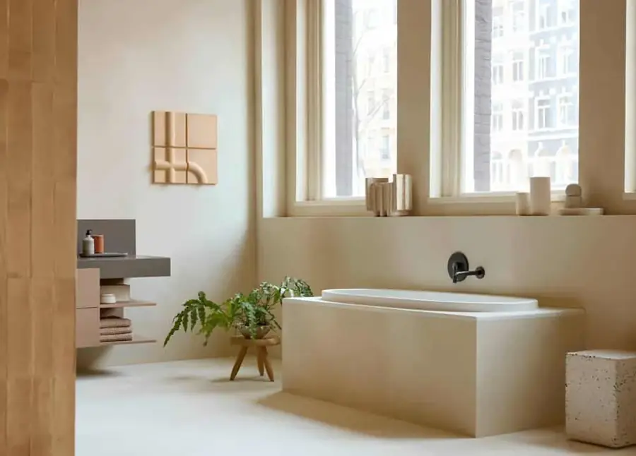
BañerasBañeras Balcoon – Duravit
Bañeras acrílicas empotradas a juego con el resto de la colección Balcoon pensadas para el confort diario.
Su superficie interior ergonómica también puede usarse como zona de ducha, maximizando el espacio.
Disponibles en blanco y su versión mate, y dos medidas: 1700 x 750 mm para uso individual y 1800 x 800 mm, ideal para dos usuarios.
El borde elevado aporta una solución estética y práctica, actuando como protección contra salpicaduras. Incluyen un estante integrado para almacenar utensilios de baño.
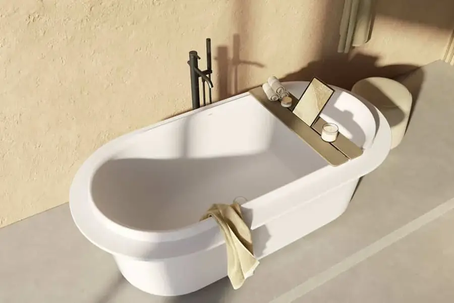
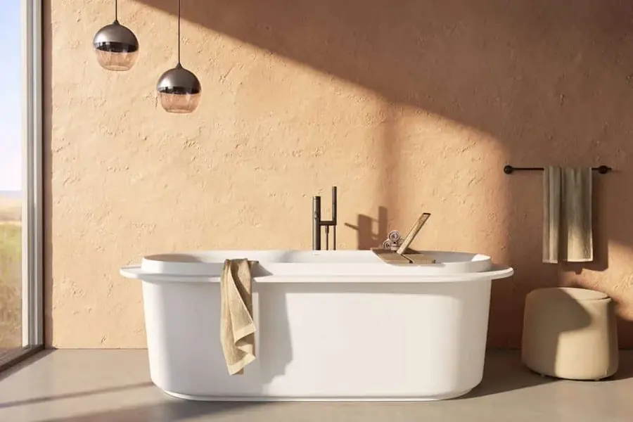
BañerasBañera Vitrium - Duravit
Vitrium amplía su colección con una bañera diseñada por Christian Werner en DuroCast® mate, un material mineral resistente y de tacto aterciopelado.
Una pieza exclusiva con un marco exterior, ligeramente elevado, que actúa como bandeja funcional reforzando su valor práctico y convirtiendo el momento baño en un auténtico ritual.
Disponible en versión exenta o versión mural, esta última con sistema de aire, completa la serie de lavabos y muebles de baño. Soluciones eficaces, en materiales nobles y un lenguaje estético cálido.
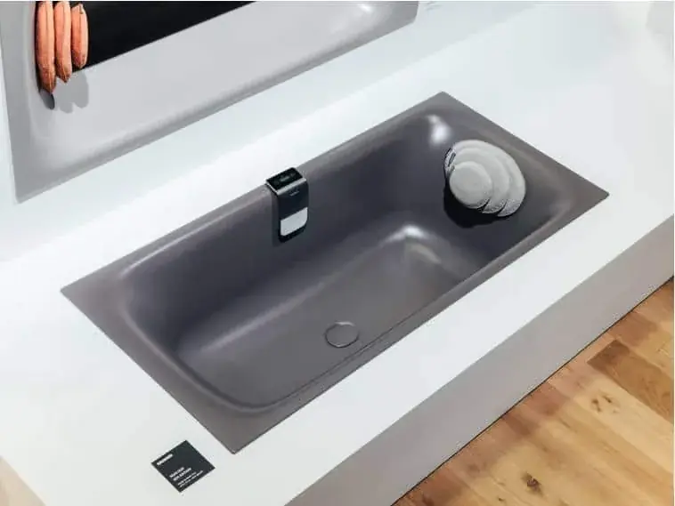
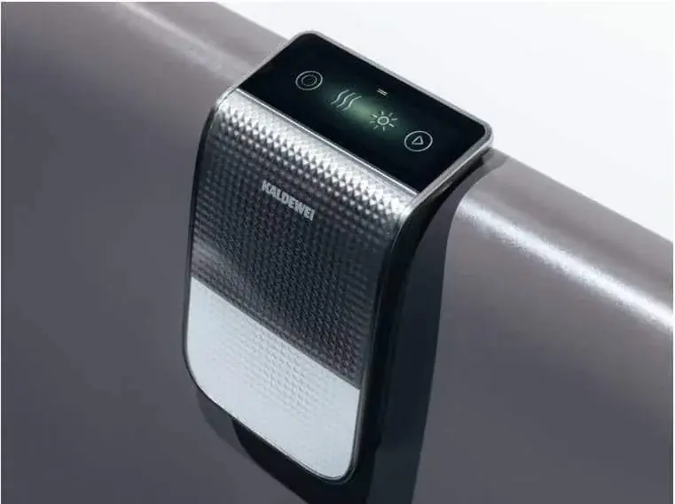
BañerasBañera NUIO DUO – Kaldewei
Bañera diseñada por Stefan Diez para proyectos de alta exigencia estética y funcional. NUIO representa la propuesta más sofisticada de Kaldewei, con un efoque centrado en la ergonomía y experiencia sensorial.
Su diseño minimalista integra todos los elementos técnicos, priorizando la limpieza visual.
El interior está moldeado para una inmersión completa, con apoyo cervical y zona de hombros. En su versión ZEN, añade control térmico, iluminación ambiental, sonido envolvente y calor por infrarrojos. Disponible en 4 tamaños y 8 tonalidades distintas.
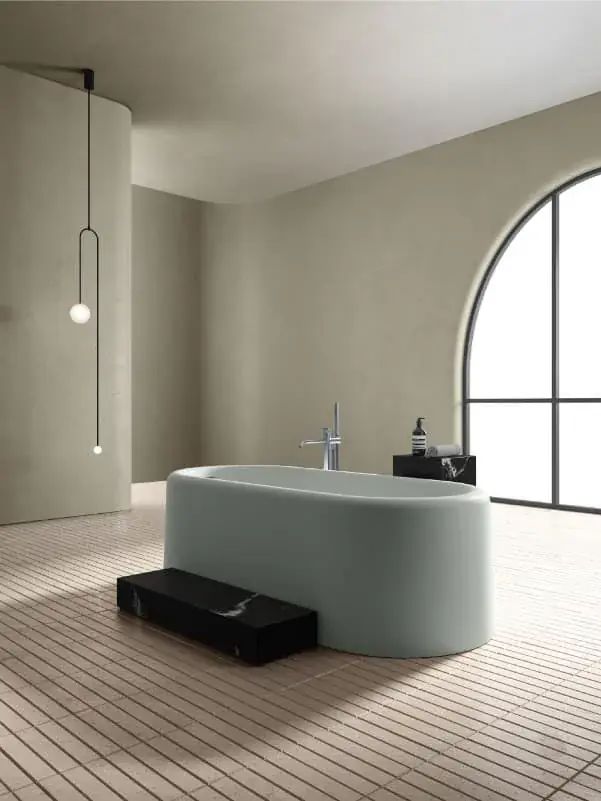
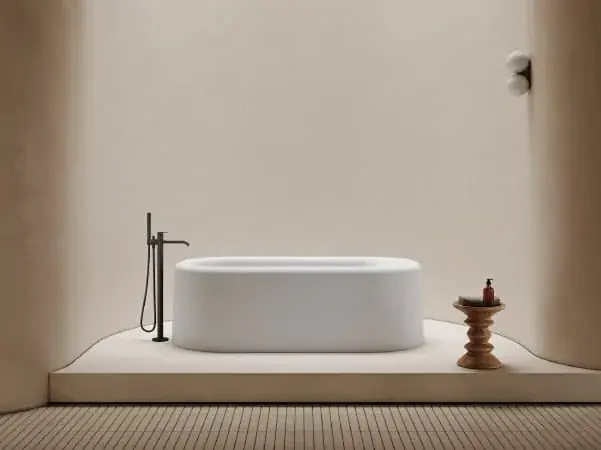
BañerasBañera Ease - Inbani
Inbani sorprende de nuevo con la línea de Bañeras Ease, una opción pensada desde las necesidades reales que presenta una vida cotidiana.
Con un diseño amable, de líneas suaves y redondeadas, la simplicidad que caracteriza a su estilo coincide con su facilidad de uso y adaptación.
Equilibrio entre distinción y discreción. Sus formas limpias la convierten en una pieza versátil ideal para integrarse en cualquier baño con grandes opciones de personalización. La colección está disponible en acabado Solidsurfae y en 60 colores de la carta UHS.
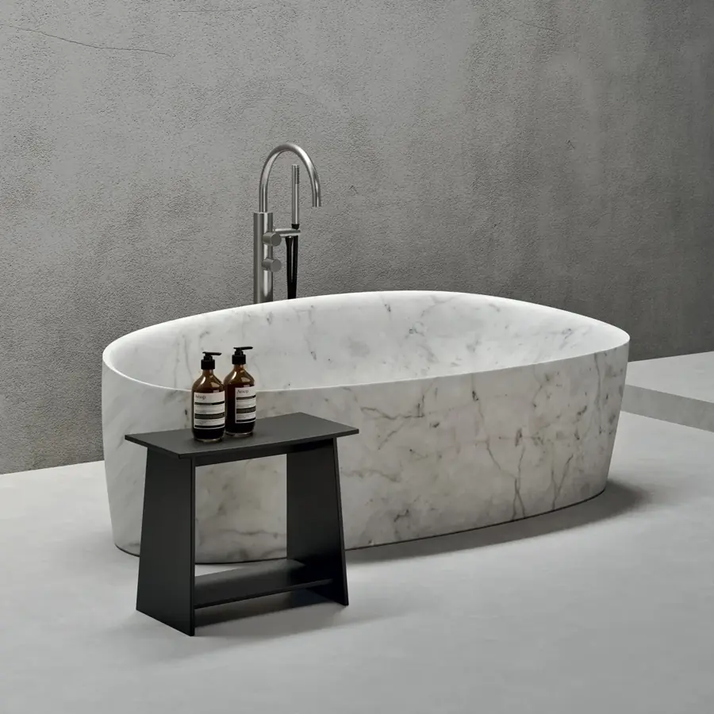
BañerasBañera de mármol Luni – Rexa Design
La marca italiana de referencia en productos para baños presenta su última colección de bañeras “Luni”.
Como su propio nombre indica, la colección presenta notables influencias hacia la belleza del mármol de Carrara, extraído en los mismos Alpes Italianos. Con un diseño suave y fluido, la pieza evoca la elegancia de las formas artesanales esculpidas a mano en este material milenario.
El equilibrio perfecto entre tradición y modernidad, un toque de serenidad y lujo que eleva cualquier baño para todos aquellos que buscan un espacio de refugio.
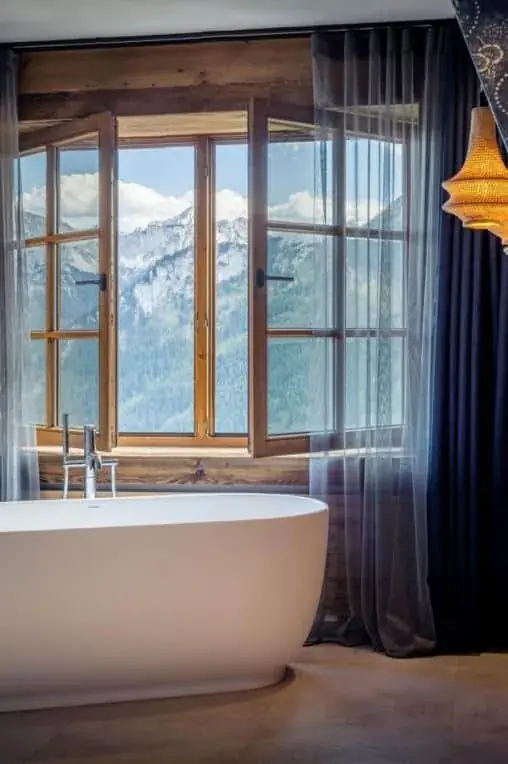
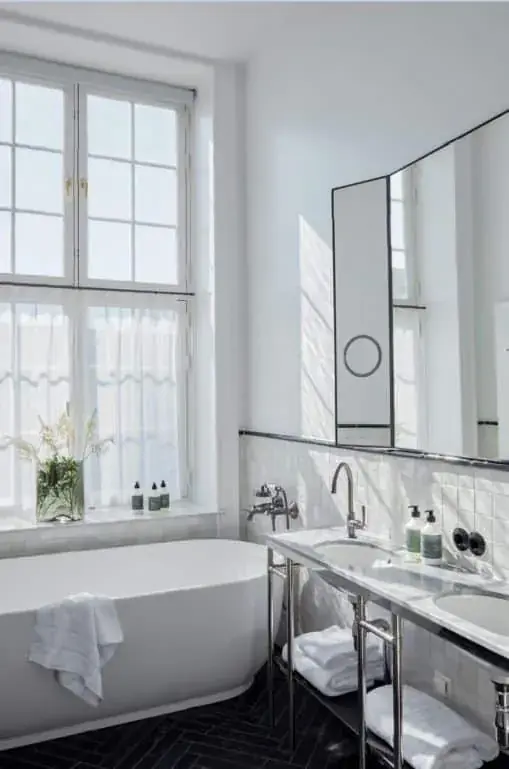
BañerasBañera minimalista Luv – Duravit
La bañera Luv de Duravit, diseñada por Cecilie Manz, destaca por su elegancia minimalista y versatilidad. Inspirada en la forma sencilla de un cuenco, su silueta ovalada y líneas suaves encajan perfectamente en cualquier ambiente.
Fabricada con DuroCast®, un material de fundición mineral, ofrece una experiencia de baño cómoda y lujosa. Disponible en versiones exentas, esquineras o adosadas a la pared, Luv se adapta tanto a hogares como a hoteles de alta gama, combinando diseño escandinavo con un alto nivel de confort y calidad.
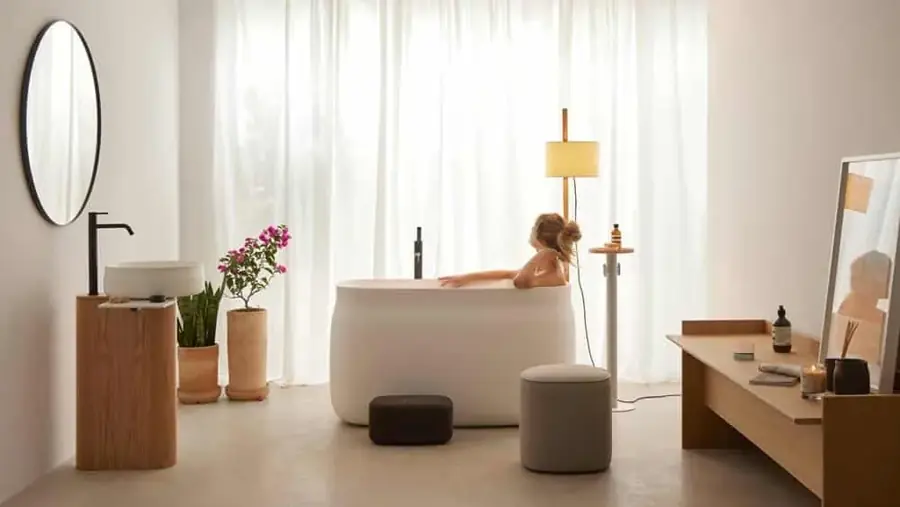
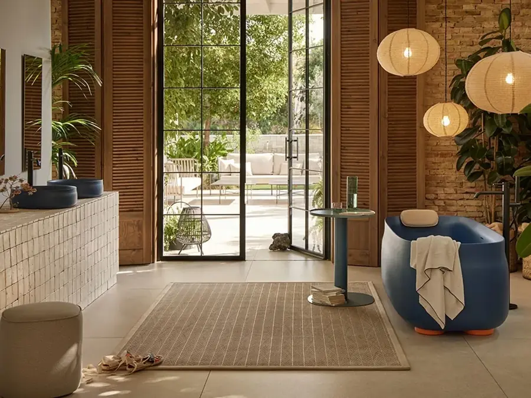
BañerasBañera Duna - Sanycces
La nueva bañera Duna de Sanycces, diseñada por el canario Jorge Herrera, se inspira en la relajante rutina del baño japonés y la calma de la naturaleza.
La atención por el detalle y el diseño sencillo del diseñador industrial, combinada con la mayor funcionalidad, transforman el baño en una experiencia de relajación única, evocando la tranquilidad de las dunas moldeadas por la brisa marina. Ideal para quienes buscan combinar estética y confort en su baño.
Con una forma sutilmente ondeada, la bañera está hecha con revestimiento en sanydur gel coat en acabado blanco mate e incluye un desagüe click-clack y rebosadero integrado.
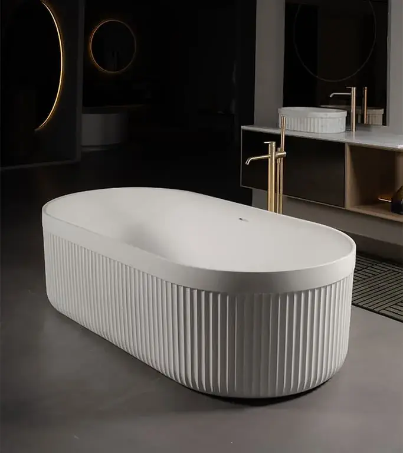
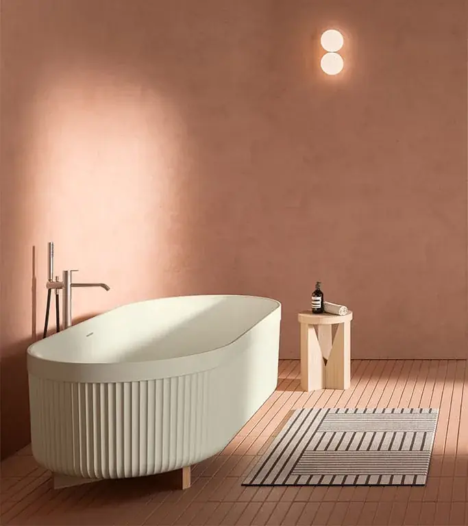
BañerasBañera de diseño Heritage - Inbani
Sumérgete en la colección «Heritage» de Inbani, donde la tradición y la modernidad se fusionan. Cada pieza desafía convenciones con formas vanguardistas y detalles únicos, creando una experiencia visual y táctil cautivadora.
Su galardonada bañera, con el premio Design+, redefine el lujo y la practicidad. Con suaves surcos verticales que recuerdan a las antiguas columnas griegas, la pieza de Inbani adquiere una personalidad protagonista dentro del baño.
El modelo está disponible en 60 colores del catálogo UHS y puede ir instalada directamente en suelo o apoyada sobre una estructura de madera.
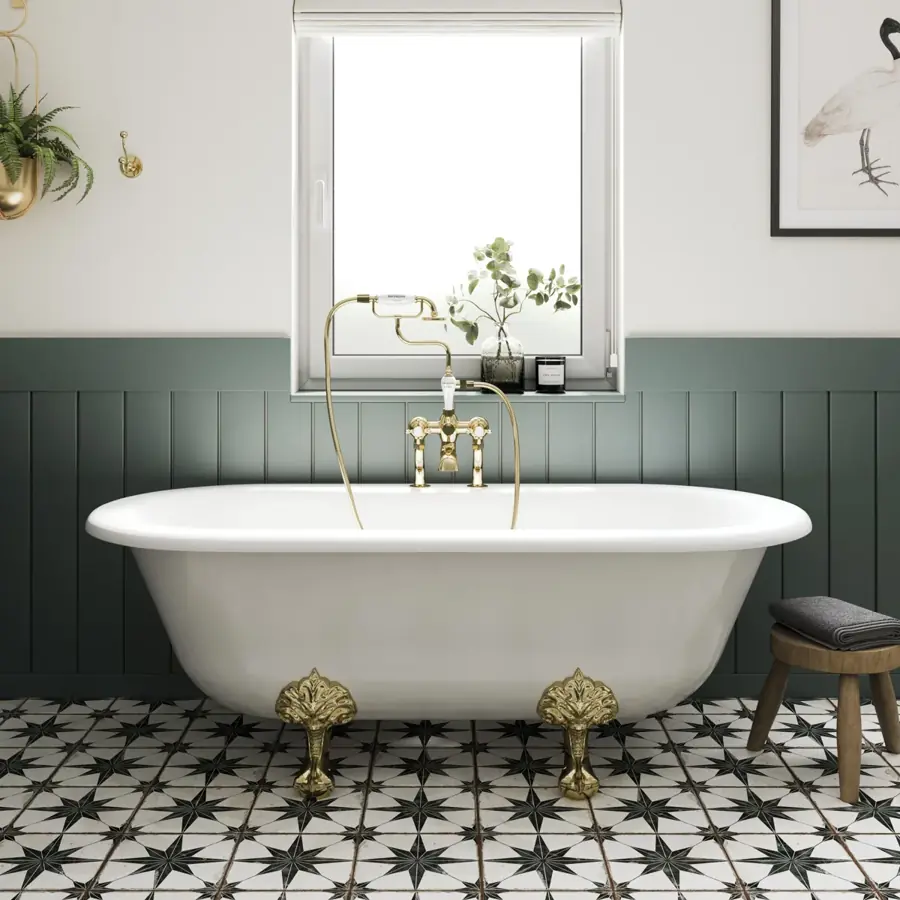
BañerasBañera con patas - Burlington
La marca referente en piezas especiales para baño presenta su nueva bañera con patas. Una apuesta con personalidad que destaca por su cuidada estética y la singularidad del diseño de sus patas sin perder la calidad y durabilidad que define a Burlington.
El modelo con acabados redondeados, está disponible en dos versiones: en suntuoso oro para los más clásicos y nickel cepillado para los que prefieren un diseño contemporáneo.
Aunque con matices, las dos bañeras aportan un toque de glamour y sofisticación a la estética de cualquier baño, convirtiéndose en las auténticas protagonistas de la estancia.
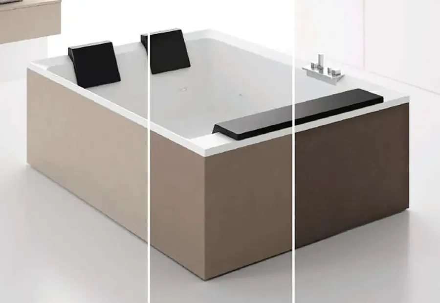
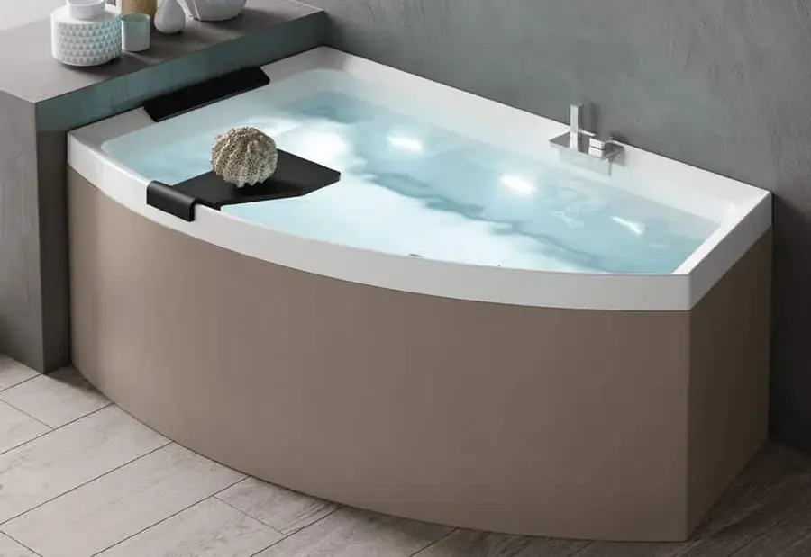
BañerasBañeras estilo natural con acabado Argilla – Novellini
Novellini sorprende con su última novedad en acabados para bañeras. Argilla es el nuevo revestimiento de paneles y muebles de bañera para aquellos que buscan un estilo artesano en esta estancia.
Además, su origen natural asegura una gran resistencia ante manchas cotidianas, golpes y cualquier tipo de ácido que pueda interferir en el día a día del espacio.
El acabado está disponible en 3 tonalidades diferentes: Polvere, Tortora y Pece. Tres opciones que consiguen fusionarse con el marco de aluminio que envuelve la pieza, a elegir entre mate blanco o negro.
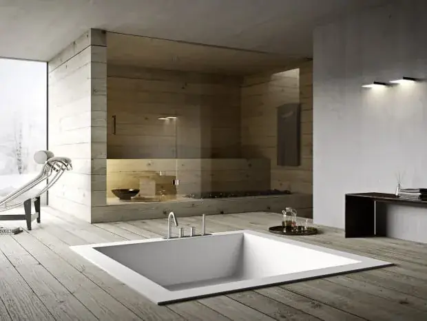
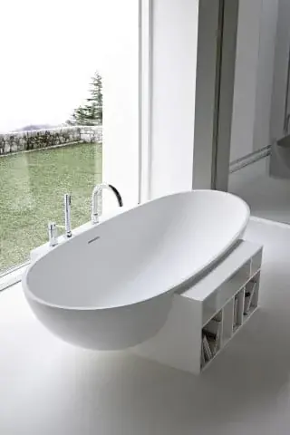
BañerasBañera Unico – Rexa Design
Rexa design presenta “Único”, la colección de bañeras más flexible del mercado con gran capacidad de adaptación a cualquier estancia.
La colección se compone por piezas de varios estilos y tamaños, encajando en todos los rincones y satisfaciendo los gustos más dispares. Disponible en dimensiones mini, maxi, empotradas o semiempotradas puedes elegir el formato que más te convenga y en el color que mejor vaya con tu baño.
Caracterizadas por sus formas sencillas, las bañeras “Único” se diferencian por incorporar en su diseño variantes con estantes a modo de librería y/o espacio de almacenaje. Piezas que forman parte de la decoración de tu baño a la vez que te ofrecen la mayor practicidad y comodidad.
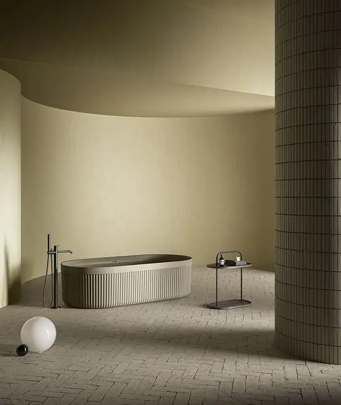
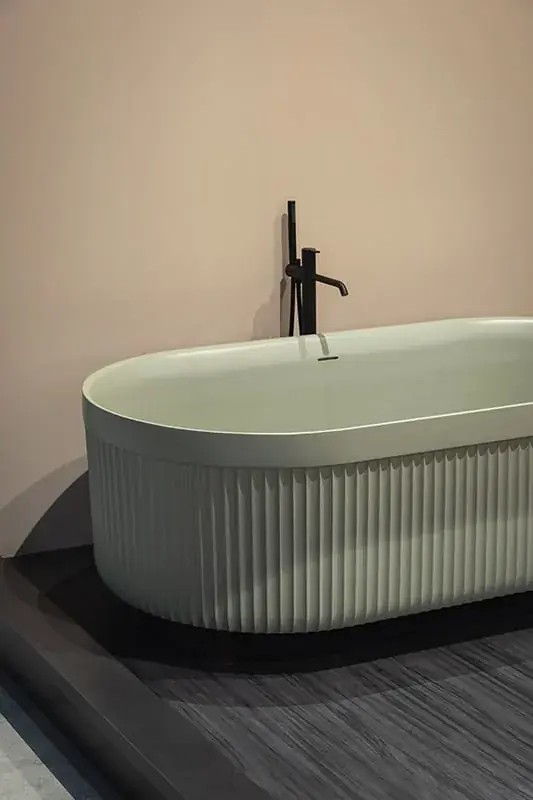
BañerasBañeras clásicas Heritage – Inbani
Patrick Norguet e Inbani rinden homenaje a los cánones clásicos de belleza con su colección de bañeras “Heritage”.
Una reinterpretación que, como su propio nombre indica, pretende recuperar las formas verticales que han marcado la arquitectura monolítica de la historia, aportando ritmo y dinamismo a sus piezas desde la elegancia y la sensualidad.
La propuesta, con tintes clasicistas, se distingue por su contemporaneidad y funcionalidad. Bañeras sofisticadas e impactantes, con una fuerte personalidad e inspiradas en elementos arquitectónicos de la antigua Grecia.
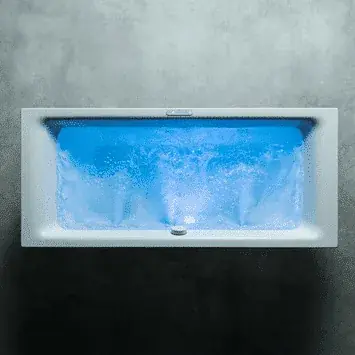
BañerasMasaje de aire SOUL - Kaldewei
El sistema SOUL ofrece relajación y calma con su flujo de aire burbujeante que proporciona un masaje cutáneo reconfortante y una sensación exclusiva de flotar. Sus toberas se integran elegante en la bañera de acero vitrificado.
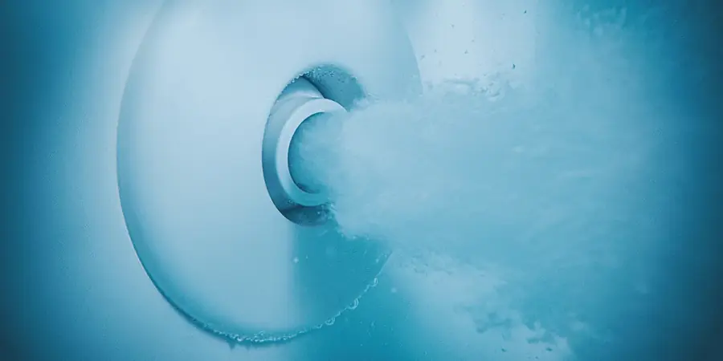
BañerasMasaje de agua FULL BODY - Kaldewei
El sistema FULL BODY ofrece un masaje con chorros de agua enriquecidos con aire para aliviar tensiones, mejorar la circulación y brindar una sensación de bienestar intenso. Con jets laterales precisos y microjets adicionales para la espalda y los pies.
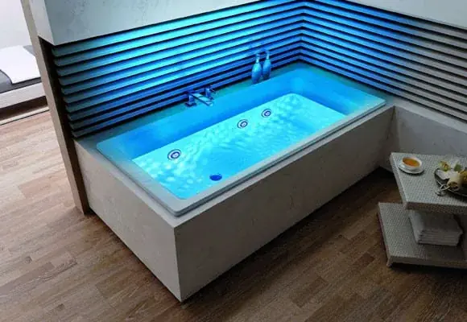
BañerasSistema básico BODY - Kaldewei
Este sistema de masaje utiliza chorros de agua y aire para proporcionar una experiencia de masaje adaptada a tus necesidades, con una variedad de intensidades para aliviar la tensión en los músculos y proporcionar una sensación de relajación.
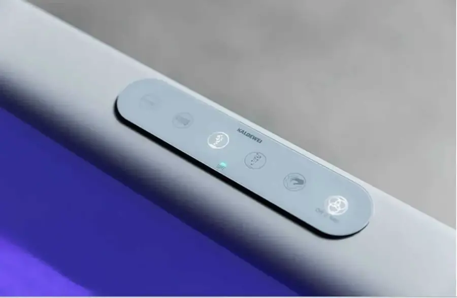
BañerasCromoterapia - Kaldewei
Los sistemas de hidromasaje de Kaldewei combinan luz, aire y agua para ofrecer relajación profunda mediante la cromoterapia. Se controlan fácilmente y permiten personalizar la intensidad y clase del tratamiento para el bienestar.
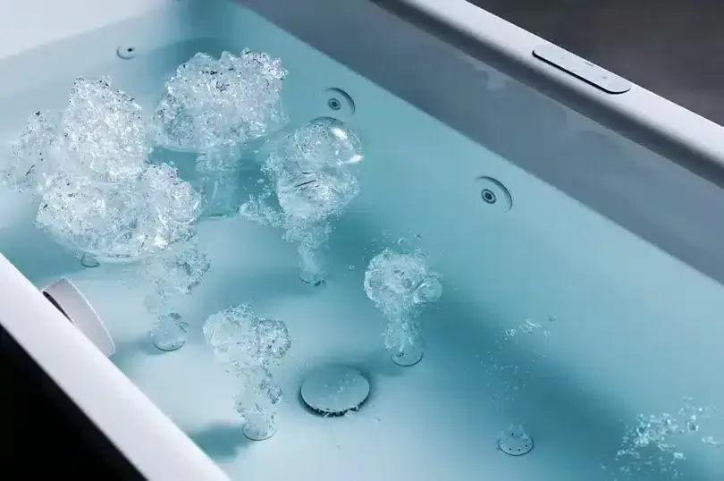
BañerasMasaje combinado BODY & SOUL - Kaldewei
El sistema de masaje BODY & SOUL de Kaldewei combina agua y aire para relajar músculos y estimular la piel. Ajuste de programas e intensidad, con jets precisos para el cuerpo y especiales para la espalda y los pies.
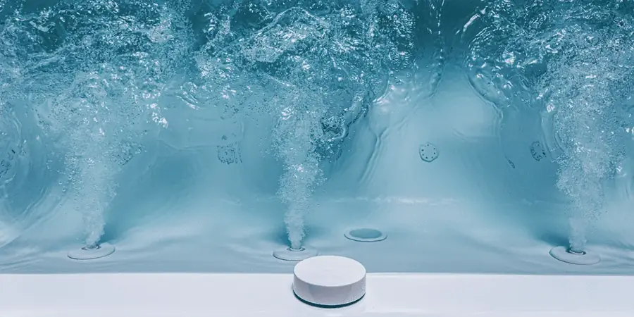
BañerasSistemas de hidromasaje - Kaldewei
Kaldewei, líder en soluciones para cuartos de baño de acero vitrificado, presenta cuatro sistemas de hidromasaje personalizados para relajación auténtica. Ofrecen máxima calidad y diseño avanzado con opciones de masaje intenso, burbujas suaves y flotación.
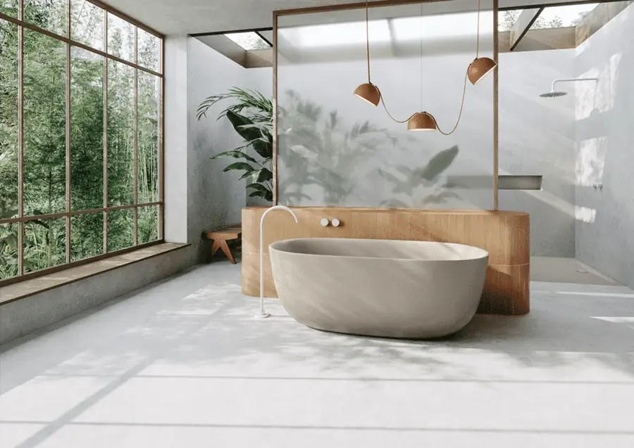
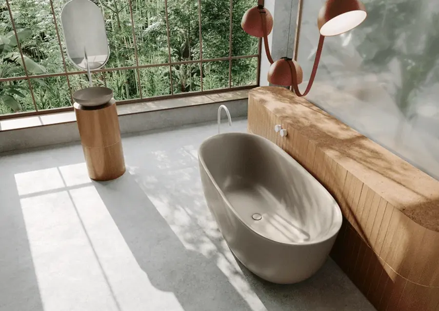
BañerasBañeras con forma de huevo Meisterstück Oyo Duo - Kaldewei
La originalidad de las bañeras Meisterstück Oyo Duo de Kaldewei es irrefutable. Sus formas y acabados de acero procesado esmaltado sostenible, creados por la ingeniería alemana, consiguen que la experiencia de baño sea única.
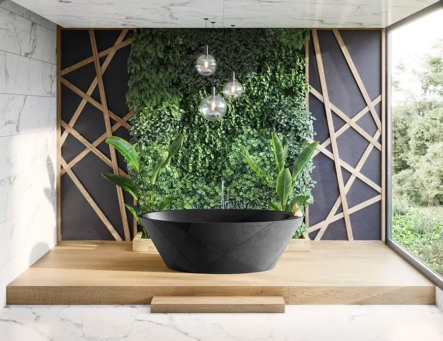
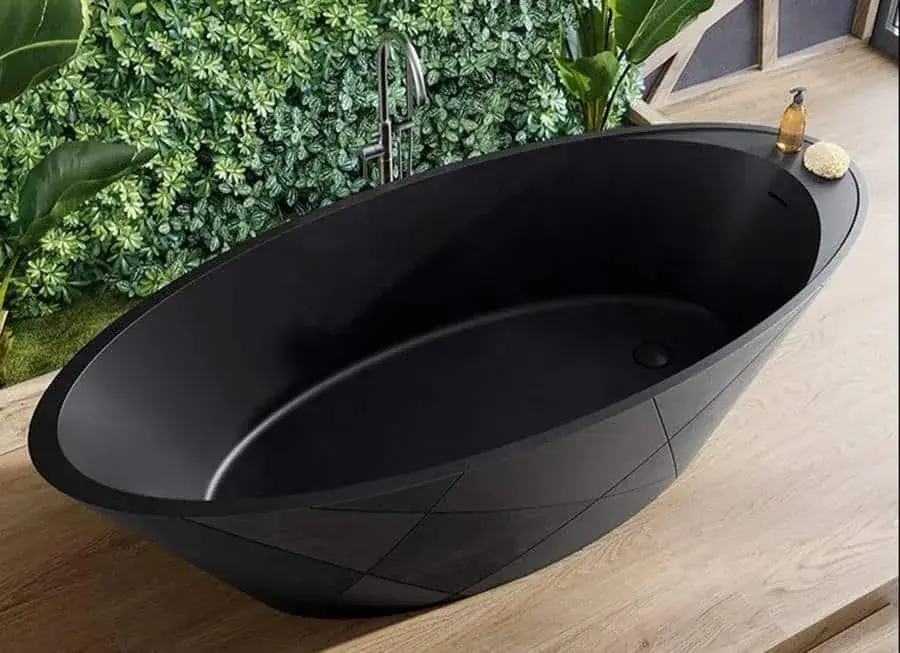
BañerasBañera Opal Quiz – Acquabella
La bañera Opal Quiz se ofrece en tres texturas, con un juego de geometrías creadas a través de piezas de alta costura. Una muy buena opción para quienes disfrutan del diseño y del confort.
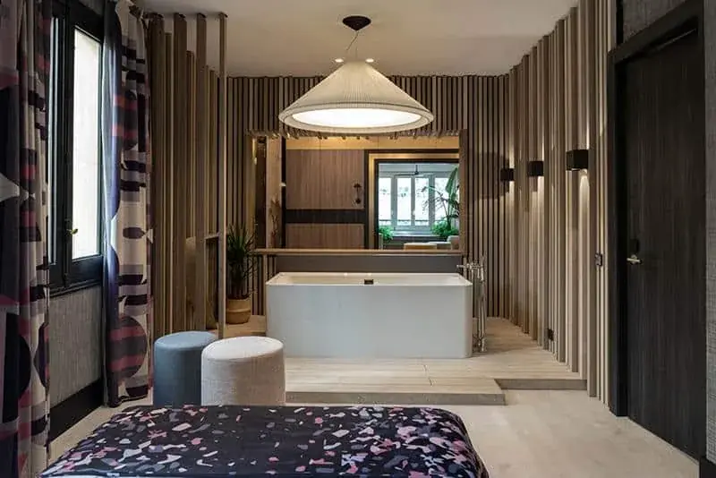
BañerasBañeras Mate Stone White – Villeroy&boch
Villeroy & Boch saca al mercado este elegante acabado, mate Stone White (RW), ideal para un amplio abanico de bañeras de esta prestigiosa marca. Un acabado sobrio y refinado tanto en el exterior como en el interior de la bañera.
Puedes optar por esta tipología de acabado en colecciones como: Antheus/Theano, Finion, Aveo New Generation, La Belle, Oberon, Oberon 2.0, Squaro Excellence y Squaro Edge 12.
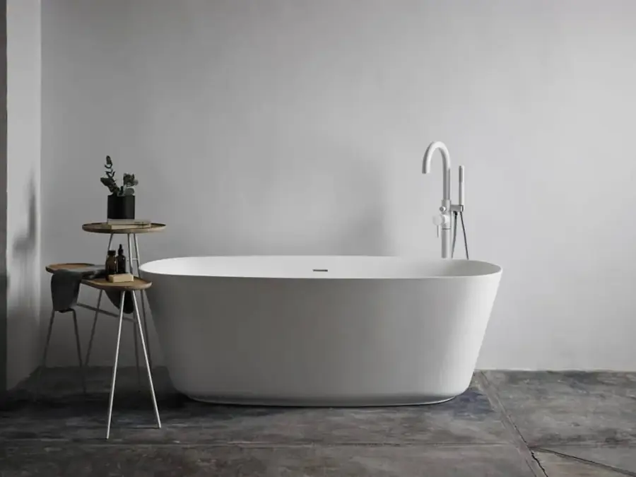
BañerasBañera Vesta – Inbani
A simple vista, Vesta destaca por su aspecto amable y confortable. Pero hay mucho más: Inbani nos presenta una bañera de diseño único y refinado, freestanding en Solidsurface, capaz de adaptarse a cualquier espacio de baño (160x80x58 cm).
Por otro lado, esta refinada bañera, combina a la perfección con múltiples accesorios, las mesas auto-portantes Forma, los toalleros Tray o el Bivio.
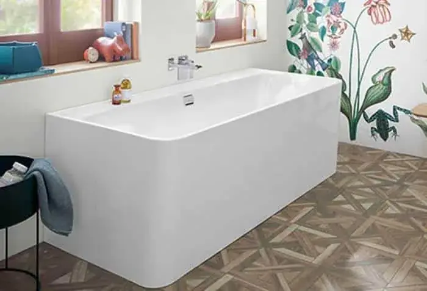
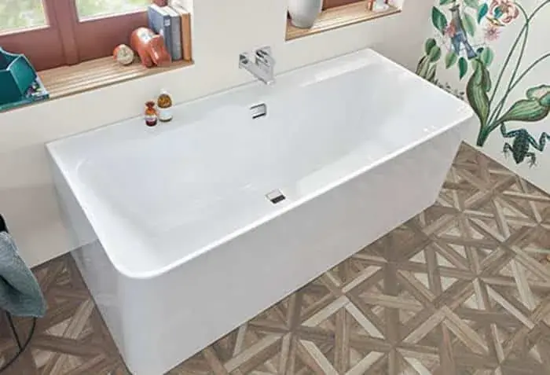
BañerasBañeras Collaro – Villeroy&Boch
De la misma colección que lo muebles de baño y los lavabos, esta nueva bañera destaca por el diseño de su perfil que facilitar el apoyo, su desagüe en varios y llamativos colores, así como por la amplitud de su superficie.
Y si también quieres, tienes la opción de incorporarle un sistema de hidromasaje.
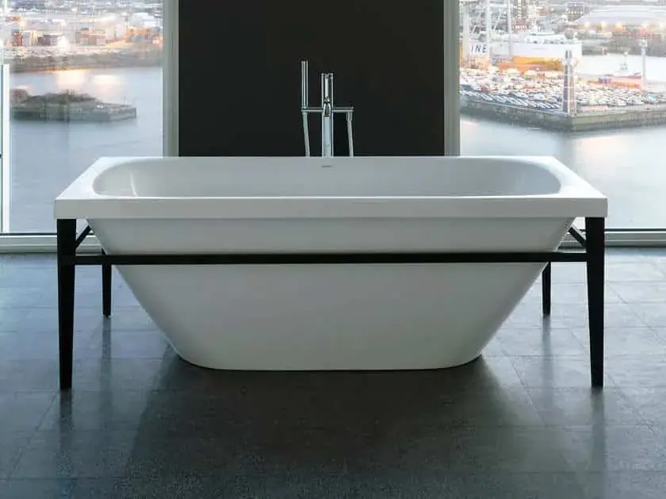
BañerasBañera exenta Xviu – Duravit
Duravit, aportando coherencia estética y gama a la nueva colección para baños XViu, nos presenta la Bañera XViu.
De tipo exenta, destaca el bastidor de metal que la rodea, disponible en color negro mate y champagne, el cual contrasta sugerentemente con el blanco de la bañera.
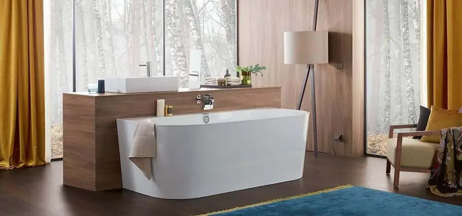
BañerasBañeras Oberon 2.0 – Villeroy&Boch
Claridad de diseño y funcionalidad. Con una ligereza indescriptible, Oberon 2.0 eleva las características de nuestro clásico diseño Oberon a un nuevo nivel. Un borde de tan solo 10 mm, radios aún más precisos y un rebosadero a ras aportan una fascinante claridad a las bañeras Quaryl®.
El modelo de pared o ‘península’ puede personalizarse con un faldón de color que la convierte en un elegante elemento destacado del baño. Podrás seleccionar entre la gran variedad de colores SIKKENS, NCS y RAL.
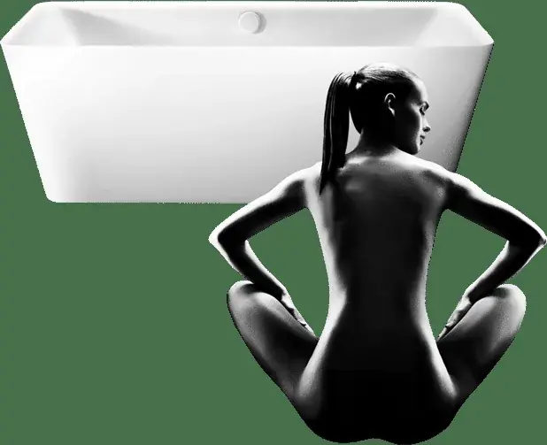
BañerasBañera Sound Wave – Kaldewei
¿Te gusta cantar en el baño, o prefieres escuchar tu música favorita?
Tanto prefieres la primera como la segunda opción, o quizás un mix entre las dos, Kaldewei te propone una idea perfecta.
Hablamos de Sound wave, un revolucionario sistema de sonido (bajo y en el mismo agua), con el que escuchar música y bañarte a su ritmo.
Imagínate dentro de una bañera (convertida en un cuerpo de resonancia), en la que oír la música de tu Smartphone, tablet u ordenador portátil.
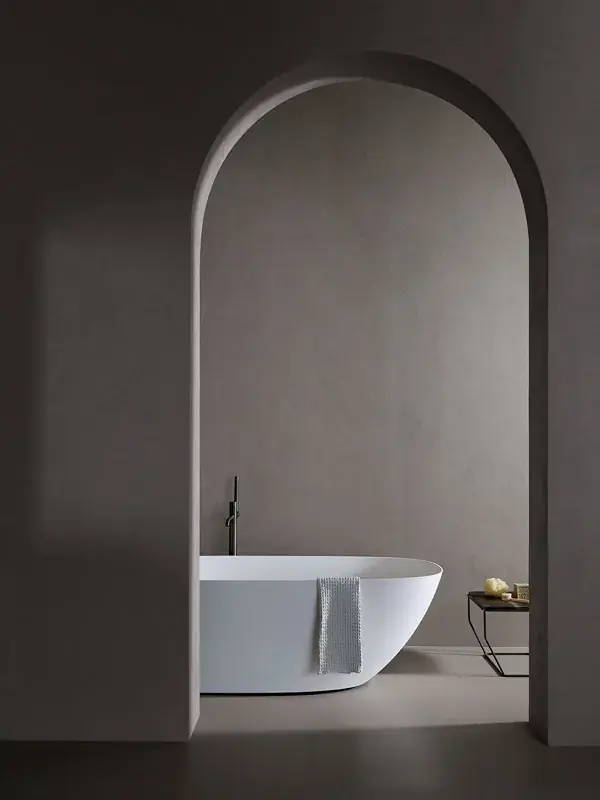
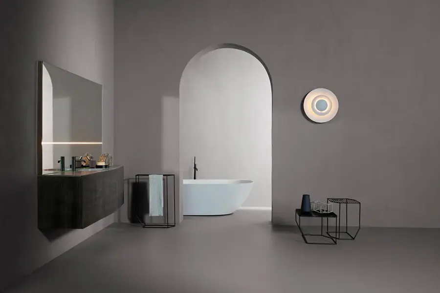
BañerasBañeras Forma – Inbani
Dentro de la colección Forma de Inbani, las bañeras (de líneas ovaladas) y algunos de sus accesorios, tienen especial protagonismo.
La colección cuenta con dos opciones de bañeras con distintas capacidades, para que sea más fácil adaptarlas a baños de diferentes dimensiones: 300 L y 750 L.
A lo anterior se unen toalleros y mesas auto portantes a juego.
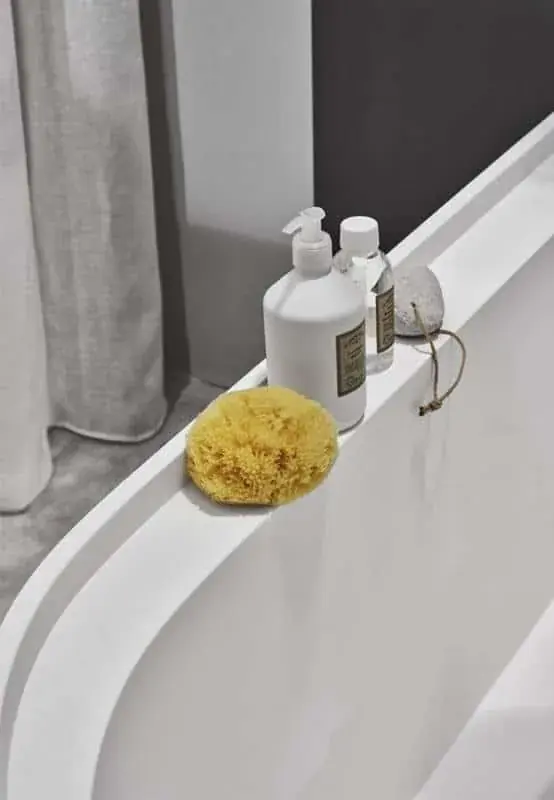
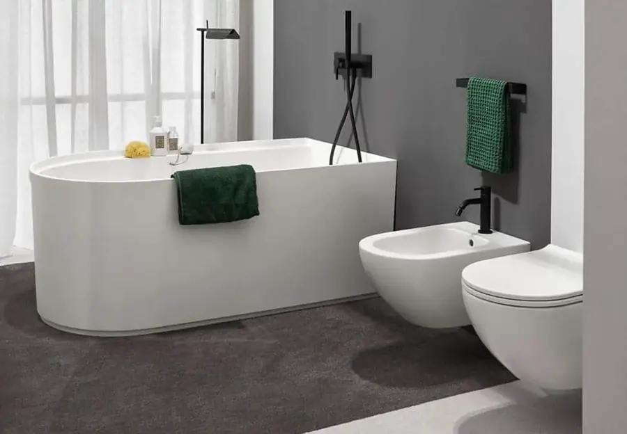
BañerasBañera Febe – Cerámica Cielo
La delicadeza de formas, el diseño amigable, y la utilización de materiales de primerísima calidad, son detalles propios del fabricante italiano Ceramica Cielo, quien acaba de presentar su nueva bañera monolítica FEBE.
Un práctico diseño de medidas 140x80x57h cm, disponible en varios acabados (maderas, metales, mármol y cuero), materiales y colores (blanco, brina y arenaria).
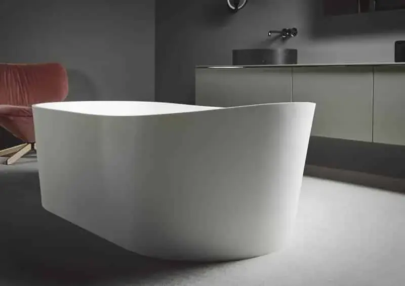
BañerasBañera Giro – Inbani
La sofisticación y la elegancia no están reñidas en el baño moderno, pero hay que saber integrarlas.
En Inbani saben hacerlo, y nuevamente lo ponen de manifiesto con esta propuesta de bañera, de nombre Giro.
Cilindro, elipse y sobriedad del diseño, engloban una bañera fabricada con el material solidsurface (en mate), accesorios y acabados en metal, que se integran a la perfección para satisfacer las propuestas de baño más minimalistas.
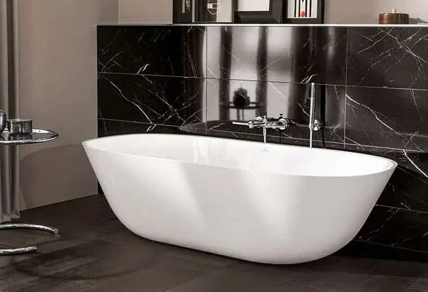
BañerasBañera Theano – Villeroy&Boch
Con el diseño de esta nueva bañera, Villeroy & Boch, y en concreto su diseñador Christian Haas, nos hacen un guiño a la escuela Bauhaus y al estilo Art Déco.
La Bauhaus en cuanto a que la colección Theano aspira a convertirse en un objeto imperecedero; Art Déco en cuanto a su buen gusto.
Fabricada en Titan Ceram, Theano espera convertirse en todo un clásico del cuarto de baño de hoy y del mañana.
- Bañeras
Bañera Origin - Inbani
¿Te ves capaz de trasladarte al Japón rural? A esa cultura llena de tradiciones, artesanos cuasi perfectos, pausas, lentitud y precisión…
Cuándo piensas en un jardín japonés, ¿qué te viene a la mente? Paz, bienestar y relax, ¿verdad?Pues ahora traslada todo lo anterior al cuarto de baño moderno, y a un producto, la bañera, sinónimo de todos los atributos expuestos.
La bañera Origin, su tamaño reducido, sus impecables líneas circulares, y el material con el que está fabricada, Ceramilux, es la nueva propuesta del fabricante español Inbani, con la que disfrutar de ese algo más tan importante hoy en día en el cuarto de baño moderno y funcional.
- Bañeras
Bañera Inmersion Neri&Hu – Agape
Basadas en un concepto de bañera japonesa y china muy antiguo (seguro que lo has visto en alguna película), y con la idea de facilitar el placer del baño en bañera a una sociedad en la que el espacio, entre ellos el del cuarto de baño, es cada vez más escaso.
Neri&Hu lanzan Inmersion, una bañera más alta y profunda que las habituales, en la que la postura del cuerpo en su interior es más recta, con un diseño minimalista, y que como verás en las imágenes, garantiza una experiencia de lo más relajante y placentera.
Sus dimensiones son 147,2 x 70,7 x 72,5.
- Bañeras
Bañera–ducha Único - Rexa Design
Rexa Design nos presenta un novedoso producto, una bañera-ducha óptima para aprovechar al máximo el espacio y las bondades del cuarto baño de hoy.
Se trata de una bañera que cuando lo decides puedes convertir en ducha gracias a su funcional diseño y elementos técnicos: incorpora unas lamas en estratificado Polaris que, o bien son plato de ducha o bien se retiran para disfrutar de un baño en una generosa bañera en Corian.
Esta bañera ducha, que en caso de quererlo puedes solicitar a medida, la tienes disponible en tres modelos, dos alturas (45 y 55 cms), y en las siguientes medidas: 170 x 80 cm, 170 x 90, 180 x 80, 180 x 90, 190 x 80, 190 x 90.
- Bañeras
Bañera de diseño Pear Cut – Agape
Patricia Urquiola ha diseñado la bañera Pear Cut para la firma italiana Agape.
Se trata de una edición especial, en la que destacamos la estética de las formas y sus contrastes, así como el distinto abanico de opciones que tienes, el último de ellos en color cobre perlado sobre una estructura metálica de idéntico color.
La tienes disponible en medidas 178x65x83 y volumen de 310 litros. Su peso, 140kgs.
- Bañeras
Nueva bañera Vesta - Inbani
El fabricante español Inbani, acaba de lanzar una nueva bañera a su amplio catálogo de exclusivos productos para el baño moderno.
La nueva bañera Vesta, destaca por la calidez de sus formas y el elegante diseño de su silueta llena de exquisitos detalles visuales. Catalogada como bañera freestanding y fabricada en Solidsurface, la bañera Vesta la tienes disponible en medidas 160x80x58cms.
- Bañeras
Bañeras para cuartos de baño refinados - Badeloft
Esta empresa alemana líder en cuanto a calidad y estética, y presente en multitud de países, te presenta una destacable colección de bañeras en isla, elaboradas con resina mineral de alta calidad y con un precio asequible para un mayor público; así como lavabos columna, de pared y de sobre encimera, también elaborados con resina mineral; junto con griferías en isla y para lavabos.
La resina mineral con la que están fabricadas las bañeras y lavabos Badeloft, garantiza su resistencia y gran durabilidad, ya que permite que las superficies se sellen sin juntas (evitando la acumulación de bacterias, gérmenes y suciedad); posee un tacto muy agradable al contacto con la piel; facilita que las paredes de las bañeras sean delgadas, incrementando el volumen de agua que cabe y facilitando su colocación en espacios reducidos.